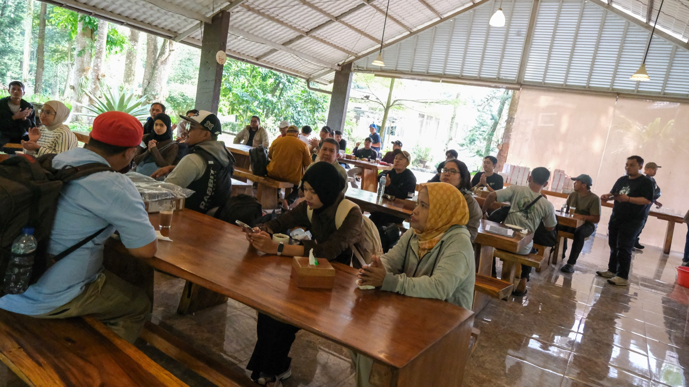

Map the family
Understand age ranges, access needs, travel, and energy.
Family Gathering Inclusive · All generations
We design a welcoming company day where colleagues and families can move at their own pace without losing the shared experience.
Plan the family day ↗
ALLKids need play, adults need ease, older guests need comfort, and everyone needs clear information. We map those needs into one coherent experience.
Understand age ranges, access needs, travel, and energy.
Create distinct experiences that still feel connected.
Bring together hosts, caregivers, safety, food, and entertainment.
Use clear cues and flexible timing to reduce friction all day.

THE OUTCOME / WELCOME · EASE · SHARED PRIDE